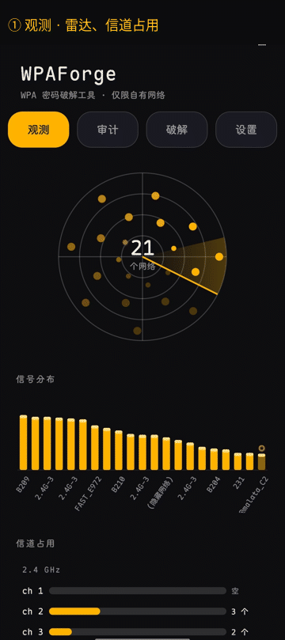
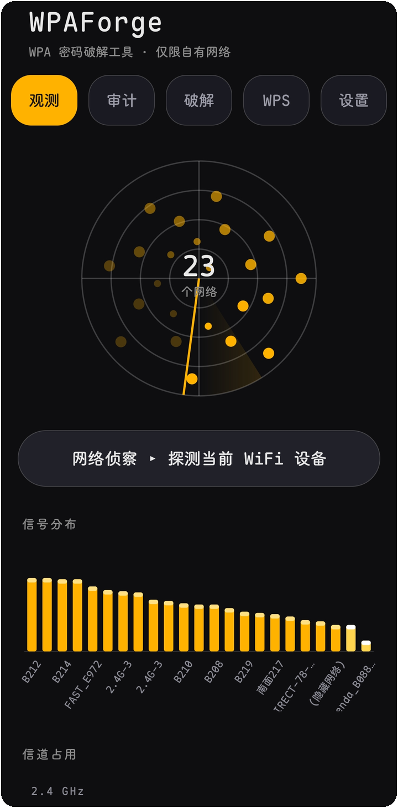
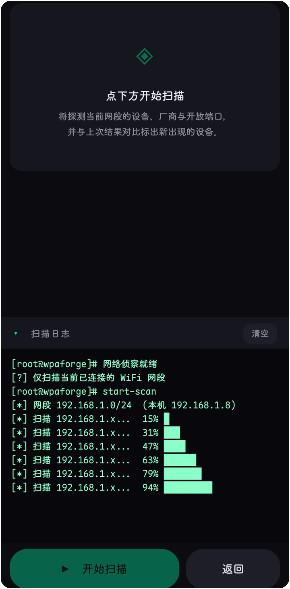
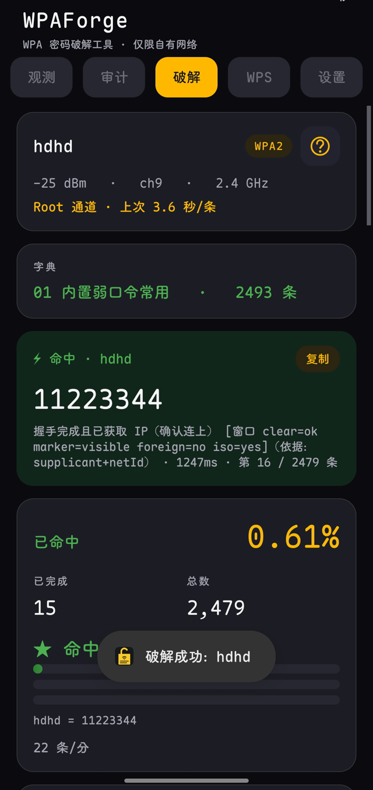
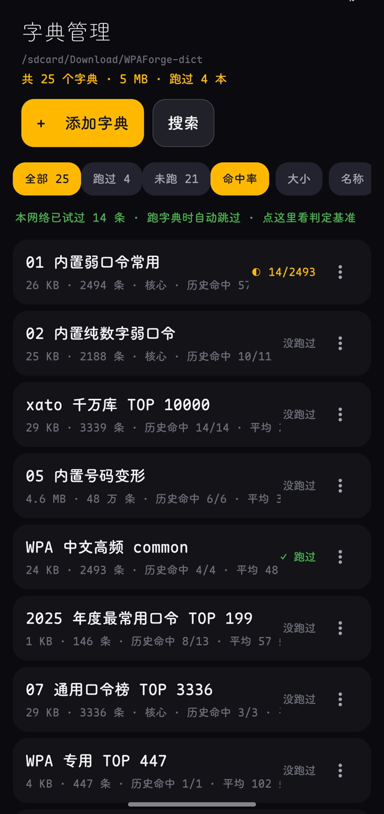
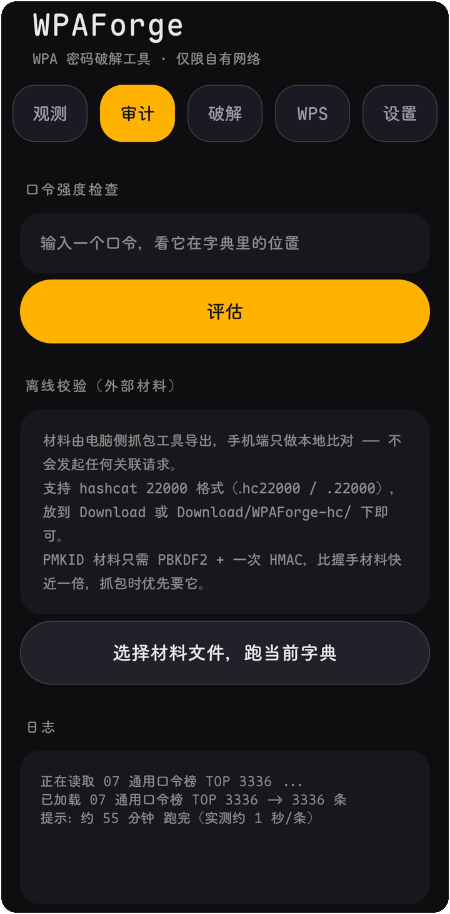
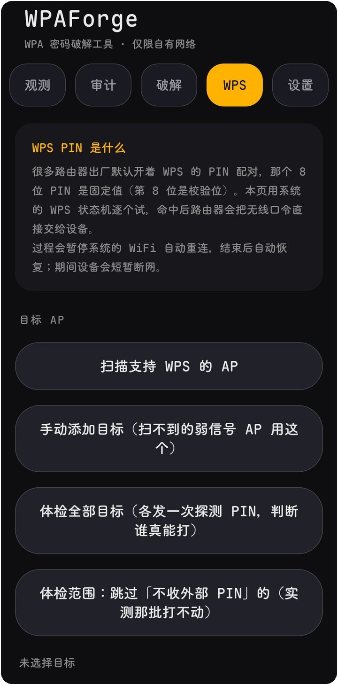
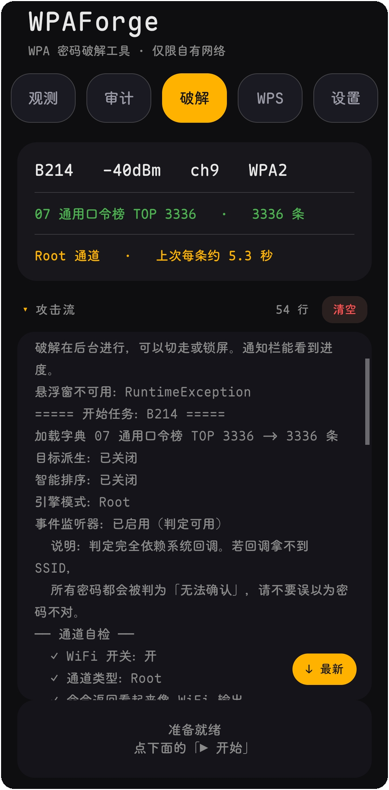
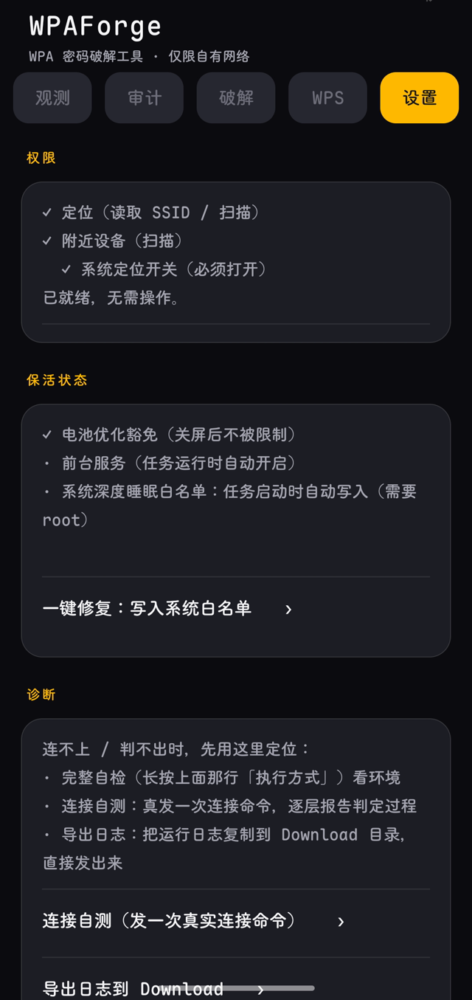

WPAForge ⚡
在手机上，把附近那台路由器的 WPA 密码试出来。
不用电脑、不用外置网卡、不用 Termux —— 原生 App，纯 Root。



它怎么找密码
不翻大字典。先猜 —— 按你这台路由器可能被设成什么，造几百条，排好序，从上往下试。字典是备用的，不是主力。
猜，是有依据的。SSID 叫 FAST_E972，它会现场造出 fast2026、FAST#2026、e972e972、fast@2026 这些，现成字典里没有。厂商名从 BSSID 查 IEEE 的 OUI 表得出（419 KB / 15913 条打进包里），查不到就留空，不编一个出来。
每条都要真发一次关联请求。快的 AP 1 秒给结论，慢的 5 秒以上。手机一次只能连一个网络，这是 Android 的限制，绕不过去 —— 所以候选的质量比数量重要得多：十万条盲试是按天算的，几百条精准的通常几分钟就完。
判成功只认一种证据：4-Way Handshake 完成。SSID、supplicant 状态、IP、netId 四条必须来自同一行输出，缺一条就不算。宁可报「不确定」，也不报一个假成功。
锁屏继续跑，中断能接上。进度持续落盘（节流写，最多 20 条一次），被系统杀掉也不丢。
还有什么
| 能力 | 说明 |
|---|---|
| 多目标队列 | 排好的一串目标依次执行，每个可单独暂停 / 继续 |
| 局域网侦察 | 连上目标后扫同网段存活主机与常见端口，按厂商归类，出可导出报告 |
| 观测页 | 信道占用图给出换信道建议，列出带宽与 Wi-Fi 代际，可按 WPS 筛选 |
| 连接可控 | 同名 SSID 多 AP 时用 -b 锁定选中那一条；可开启每次尝试换随机 MAC |
| 本机自查 | 读手机里已保存的 WiFi，给出每条密码在常见口令表里的位次 |
| WPS 攻击 | 扫描阶段就判「打不打得动」，判据以 km=WPS / WPS-M2D 为准；候选四层（厂商算法 / 内置弱 PIN 表 / 自定义列表 / 完整枚举），另有拆半攻击与断点续跑 |
| 离线校验 | 导入 .cap / .hc22000，EAPOL 与 PMKID 两条校验路径，1 万条约 37 秒 |
| 字典管理 | 内容搜索（包含 / 前缀 / 后缀 / 正则）、长按多选合并、大字典编辑不丢数据 |
和其他做法比
| 做法 | 要什么 | 快不快 | 门槛 |
|---|---|---|---|
| WPAForge | 一台 Root 的手机 | 现场派生候选，几百条一般几分钟 | 会点开始就行 |
| 电脑 aircrack-ng + 抓包 | 笔记本 + 支持 monitor 的网卡 + 抓到手握手包 | 取决于字典，大字典按天算 | 会命令行、会抓包 |
| 手机 Termux 脚本 | Phone 上的 Linux 环境 + 外置网卡 | 多半只是下载并跑 aircrack | 会折腾环境 |
| 在线字典站 | 把握手包传给别人 | 等队列 | 你的包离开了本机 |
WPAForge 的取舍：候选靠现场派生而不是堆字典，所以它擅长「路由器主人设的那种密码」，不擅长「随机 12 位强密码」。后者本来就该换 WPA3。
安装
需要 Root · Android 8.0+
没有 Root 就别试了 —— 判定依赖 su + cmd wifi。Shizuku 与免 Root 通道在 1.8.x 已移除：Shizuku 要在每次连接时借 binder，免 Root 走 WifiNetworkSpecifier 则每条候选都会弹一次系统确认框 —— 两者都撑不起逐条字典遍历。
1. 打开「观测」页，扫描附近网络，选中你的目标 2. 打开「破解」页，加载字典（或让它现场派生） 3. 点开始，锁屏等结果 —— 命中的密码会直接标出来
界面








它什么时候会失败
先把话说在前面，这样你不会把它当 bug 到处骂：
| 现象 | 原因 | 怎么办 |
|---|---|---|
| 一直在试但拿不到 | 密码不在候选集合里（随机长密码、纯手写怪口令） | 导入自己的字典，或把候选上限调高 |
| 一开始就全失败 | 目标开了 WPA3 / PMF（受保护管理帧）或 WPA2-WPA3 过渡模式 | 这类 AP 单靠关联尝试打不动，别硬啃 |
| 部分 AP 扫不到 | 手机不支持 6GHz，或用了随机 MAC 的连接 | 在设置里关掉本机的随机 MAC 再扫 |
| 连不上、报权限错误 | Root 没给，或 ROM 禁了 cmd wifi | 确认 su 可用，看 App 内自检那 6 步 |
| 中途被系统杀掉 | 后台省电策略 | 加白名单、锁屏后别清后台；进度会落盘，重开续跑 |
使用边界
仅对自己拥有授权的网络使用（自有路由器、实验室、授权渗透测试）。对未授权网络发起关联尝试是违法行为，且路由器侧会记录你的 MAC 与时间。
想要什么，去哪儿说
功能建议、机型兼容反馈、失败的 AP 特征，都丢到 Discussions； 明确的 bug 用 Issue 模板。